| 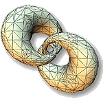 |
Multiresolution Isosurface Extraction with Adaptive Skeleton Climbing
Tim Poston
,
Tien-Tsin Wong
,
and
Pheng-Ann Heng
,
|
Abstract
- An isosurface extraction algorithm which can directly generate multiresolution isosurfaces from volume data is introduced. It generates low resolution isosurfaces, with 4 to 25 times fewer triangles than that generated by marching cubes algorithm, in comparable running times. By climbing from vertices (0-skeleton) to edges (1-skeleton) to faces (2-skeleton), the algorithm constructs boxes which adapt to the geometry of the true isosurface. Unlike previous adaptive marching cubes algorithms, the algorithm does not suffer from the gap-filling problem. Although the triangles in the meshes may not be optimally reduced, it is much faster than postprocessing triangle reduction algorithms. Hence the coarse meshes it produces can be used as the initial starts for the mesh optimization, if mesh optimality is the main concern.
Download Paper
- Acrobat:
asc.pdf (size: 5.1 Mb)
Source Code
Click asc-200a.zip (updated 4 Oct 2001) to download the latest version of Adaptive Skeleton Climbing isosurface extractor.Visual Comparison
The following table compares the statistical and visual results of the generated meshes.| Data Sets | ASC N=1 | ASC N=2 | ASC N=4 | ASC N=8 | Marching Cubes |
| Knot | 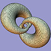 |

| 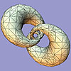 | 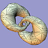 | 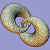 |
| No of Triangles | 12,712 | 3,682 | 1,772 | 2,054 | 13,968 |
| Timing | 8.16 sec | 3.61 sec | 2.59 sec | 2.43 sec | 1.79 sec |
| Mt. Alps | 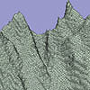 | 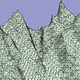 | 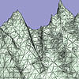 | 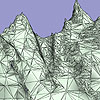 | 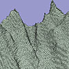 |
| No of Triangles | 423,638 | 147,562 | 90,434 | 94,339 | 423,640 |
| Timing | 547.70 sec | 207.54 sec | 137.70 sec | 132.83 sec | 151.05 sec |
| Head | 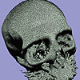 | 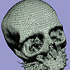 | 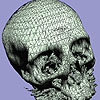 | 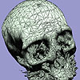 | 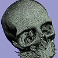 |
| No of Triangles | 580,771 | 186,331 | 136,909 | 159,207 | 592,368 |
| Timing | 339.21 sec | 138.59 sec | 97.31 sec | 100.55 sec | 61.91 sec |
| Arteries | 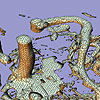 | 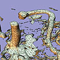 | 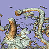 | 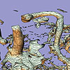 | 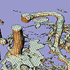 |
| No of Triangles | 263,686 | 131,769 | 139,636 | 149,251 | 263,438 |
| Timing | 311.97 sec | 134.00 sec | 103.68 sec | 128.07 sec | 56.09 sec |
{kind=link}
{kind=link}
{kind=link}
{kind=link}
{kind=link}
{kind=link}
{kind=link}
{kind=link}
{kind=link}
{kind=link}
{kind=link}
{kind=link}
{kind=link}
{kind=link}
{kind=link}
{kind=link}
{kind=link}
{kind=link}
{kind=link}